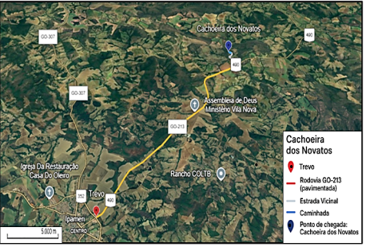
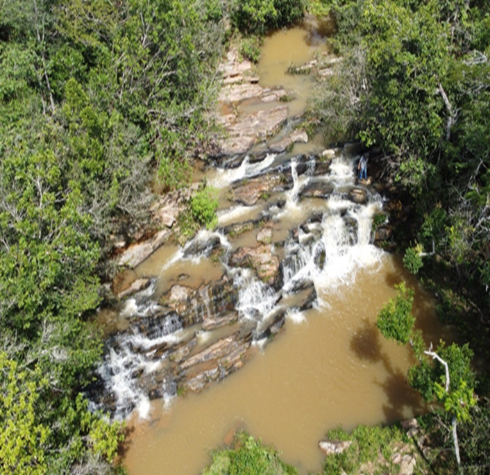
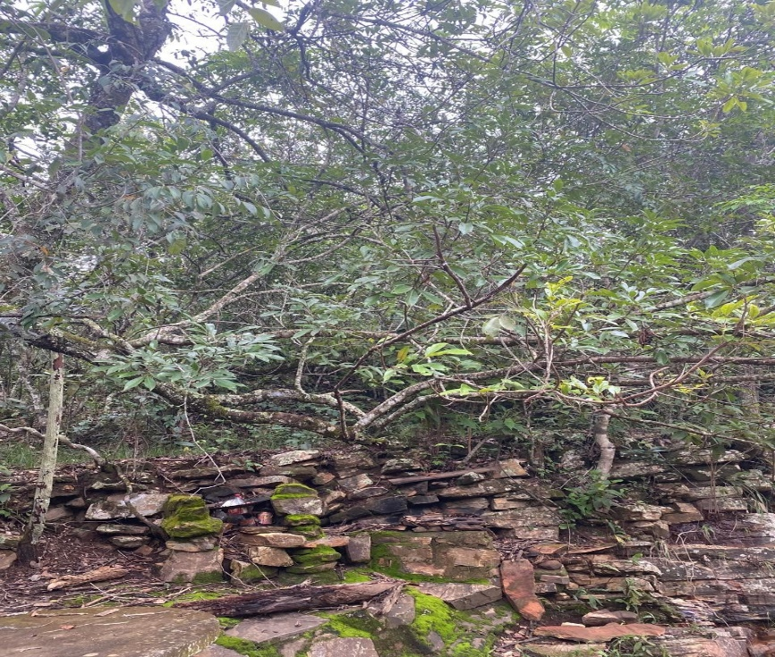
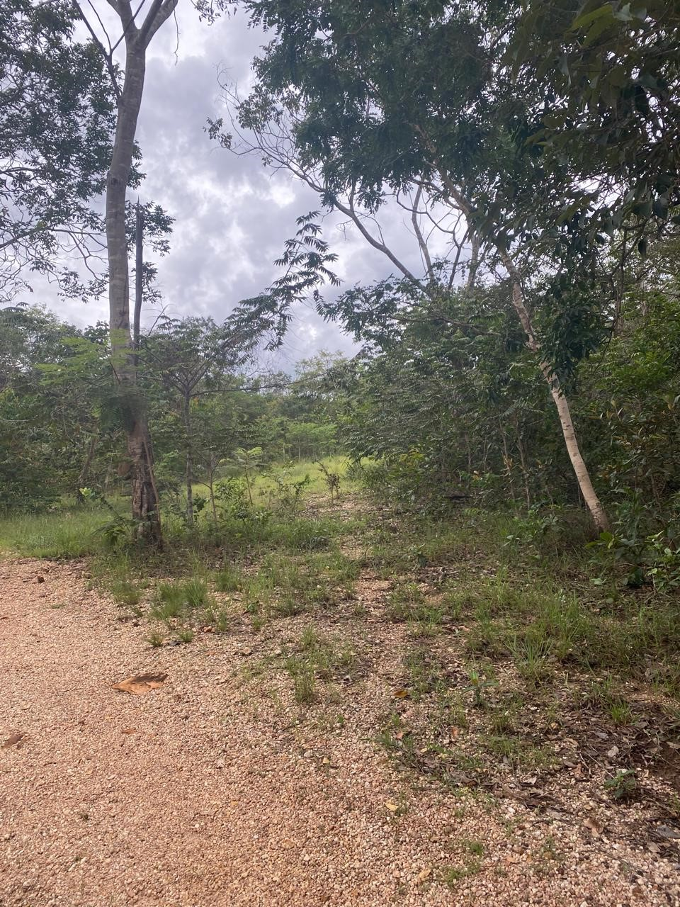
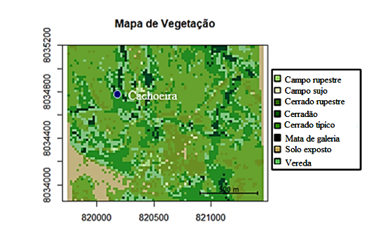

Cachoeira dos Novatos
A Cachoeira dos Novatos está localizada a cerca de 21 km do centro da cidade de Ipameri-GO, em uma região de Cerrado, a uma altitude relativamente baixa. O acesso é realizado por estrada de terra até a entrada da trilha, que possui apenas 0,31 km de extensão. A caminhada tem duração média de 10 minutos, com um ganho de elevação de apenas 12 metros acima do nível do mar. O percurso é considerado de fácil acesso, adequado inclusive para visitantes iniciantes em atividades de ecoturismo.
Atenção e Recomendações
- A caminhada é tranquila e permite a condução de grupos de até cerca de 40 alunos, desde que acompanhados por responsáveis.
- O poço presente na cachoeira é bem raso, adequado apenas para brincadeiras, não sendo indicado para banho.
- Recomenda-se trajes leves e confortáveis, calçados fechados, uso de protetor solar e repelente, além de atenção para manter a área limpa e organizada, garantindo a preservação do ambiente natural.
A Tabela 1 apresenta a extensão total do percurso (cerca de 20 km, com partida do anel rodoviário - GO 213), de acordo com cada via.
| Tipo de via | Distância |
|---|---|
| Rodovia GO-213 - pavimentada | 17,97 Km |
| Estrada Vicinal | 1,95 Km |
| Caminhada | 0,31 Km |
A Figura 1 mostra uma imagem de satélite da região e do trajeto completo da Cachoeira dos Novatos.

A trilha tem como principal atração a cachoeira em si, que está situada em um cenário natural de impressionante beleza, oferecendo contato direto com a vegetação característica do Cerrado e permitindo que os visitantes apreciem as diversas fitofisionomias que compõem a diversidade ecológica da área.


Crédito: Jair de Souza Júnior
A Tabela 2 apresenta os dados referentes à vegetação predominante na região nos anos de 2016 e 2024.
| Ano | Campo rupestre | Campo sujo | Cerrado rupestre | Cerradão | Cerrado típico | Mata de galeria | Solo exposto | Vereda |
|---|---|---|---|---|---|---|---|---|
| 2016 | 1,00% | 0,39% | 18,43% | 16,66% | 53,36% | 2,79% | 2,06% | 5,27% |
| 2024 | 0,90% | 0,26% | 9,28% | 23,35% | 43,82% | 4,06% | 6,24% | 12,06% |


Na Trilha da Cachoeira dos Novatos, as vegetações predominantes são o Cerrado típico e o Cerrado rupestre.
A figura 6 apresenta o mapa de cobertura vegetal da área referente à Trilha da Cachoeira dos Novatos, para 2024.

Interpretação das Mudanças na Vegetação (2016–2024)
A análise comparativa entre os anos de 2016 e 2024 demonstra transformações significativas na composição da vegetação da Trilha da Cachoeira dos Novatos.
O Cerrado rupestre, que em 2016 representava cerca de 18,43% da área, sofreu uma redução acentuada para 9,28% em 2024, indicando retração expressiva desse tipo de formação vegetal.
Por outro lado, o Cerrado típico, que era predominante em 2016 (53,36%), apresentou queda para 43,82% em 2024, mantendo-se, contudo, como a principal fitofisionomia da região. Já o Cerradão cresceu de 16,06% para 23,35%, sugerindo um processo de adensamento da cobertura vegetal e sucessão ecológica em áreas que antes eram mais abertas.
Em contrapartida, o Solo exposto apresentou acréscimo considerável, de 2,06% em 2016 para 6,24% em 2024, o que pode estar relacionado a processos erosivos naturais ou à ação antrópica nas proximidades da trilha.
De modo geral, os dados indicam que, apesar da redução do Cerrado rupestre e da diminuição relativa do Cerrado típico, houve expansão de formações mais densas e associadas à presença de água, sugerindo um cenário de regeneração e diversificação da vegetação local. Ao mesmo tempo, o aumento do Solo exposto aponta para a necessidade de monitoramento ambiental contínuo, a fim de avaliar se tais mudanças resultam de processos naturais ou de pressões humanas sobre a paisagem.